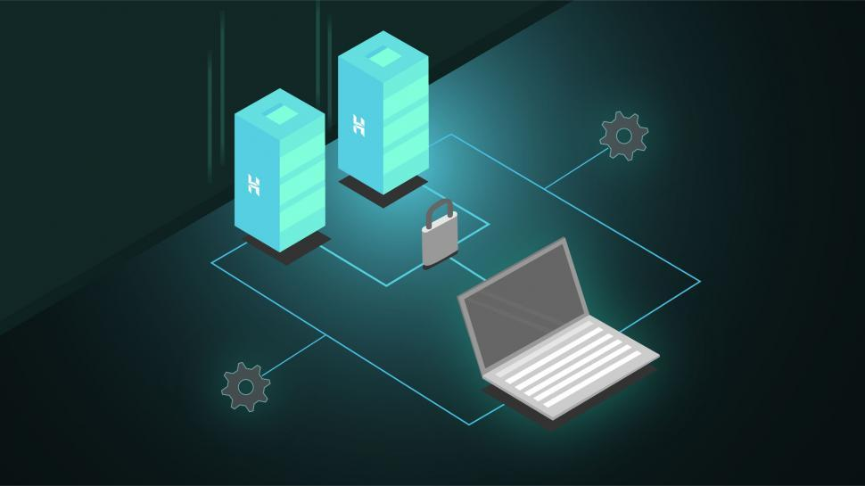
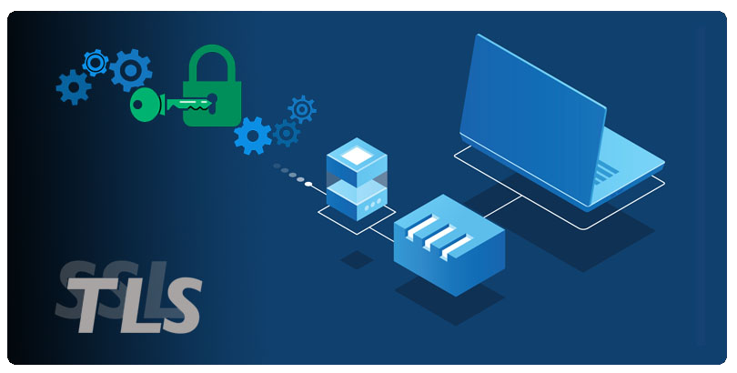

http regola il modo in cui una pagina viene trasferita dal , esso è l’ acronimo di hypertext transfer protocol; l’ http è la lingua che utilizza il browser per comunicare ai server ciò che viene richiesto; è stato creato nel 1989; l’ http è un protocollo stateless ovvero senza memoria che permette la ricerca ed il recupero di informazioni tra un client e un server
HTTPS
ovvero Hypertext Transfer Protocol Secure esso funziona come l’ http ma con comunicazioni crittografate, mentre il protocollo http regola solo come devono essere strutturati i contenuti scambiati tra client e web, questo protocllo e chiamato TCP trasmission control protocol; per questo protocollo esiste un’ estensione ovvero security socket layer, che oggi si evoluta in , le informazioni passate con questo protocollo sono in modo tale che solo mittetente e destinatario siano in grado di leggerle, infatti se nell’ url e presente ://https e non ://http, il computer aggiunge automaticamente il numero di porta 443 con il quale si impostera automaticamente su una comunicazione TLS/SSL
SISTEMA CLIENT-SERVER
Il sistema e formato da due tipi di moduli il client ed il server, che quando devono cooperare eseguono un , eseguiti su macchine diverse connesse alla rete, il server svolge quelle operazioni necessarie alla realizzazione di un servizio, il client invece si limita a verificare la veriticita delle informazioni inserite dall’ utente e le invia al server.
CLIENT/SERVER-COMPUTING
Sul computer client e in esecuzione un “programma client”: il quale permette all’ utente di inviare informazioni al server, converte la richiesta in modo che sia comprensibile per l server e a sua volta formatta la risposta del server in modo che sia leggibile per l’ utente, a sua volta sul serrver gira un softwere server che processa le richieste del client, e risponde al client con l’ informazione richiesta

SSL e TLS
TLS è una evoluzione di SSL, di cui ormai le vulnerabilità sono note e lo rendono debole; infatti molte delle sue versioni sono ormai deprecate; in tutto sono state rilasciate tre versioni ssl; di cui la prima non venne mai rilasciata per ovvi problemi di sicurezza e le altre divennero obsolete gia dal 2015; mentre dopo la versione ssl 3.0 venne rilasciata la prima TLS , che oggi giorno e ormai stata deprecata, ma comunque anche essa si evoluta arrivando all’ odierna 1.3 rilasciata nel 2018; tutt’ oggi se pur le connessioni ssl non vengano più utilizzate ne è rimasta la convenzione, infatti un certificato ssl e valido sia per quest’ ultima che per il tls.
TLS è un evoluzione di SSL non solo dal punto di vista di cryptazione di dati ma anche di prestazioni, entrambe i protocolli si basano sul

modello ISO-OSI
Alla diffuSione di internet cresceva la necessità di creare delle convenzioni applicabili su reti sempre piu ampie, in maniera da garantire la comunicazione; cosi si creò il modello ISO-OSI, che all’ inizio si occupava dell’ interoperabilita dei prodotti;
il modello iso-osi anche chiamato pila iso osi e strutturato in 7 livelli che intercomunicano tra loro, essi si dividono in media-layer e host-layer
Livello 1 : i nostri bit qui vengono trasformati in un segnale fisico
Livello 2 : i segnali fisici vengono riorganizzati in pacchetti per viaggiare lungo le vie di comunicazine
Livello 3 : attività che instrada la comunicazipne sul percorso di rete ottimale da utilizzare per la consegna dei dati
Livello 4 : i protocolli stabiliscono tutto cio che riguarda la trasmissione tra i due sistemi
Livello 5 : in questa fase si verifica che il significato del messaggio non sia deformato
Livello 6 : converti i pacchetti in un formato standard attraverso la crittografia
Livello 7 : grazie a questo ultimo livello il computer può leggere l’ informazione mandatagli
Criptazione e Decriptazione
La crittografia è la base della protezione dei dati, e garantisce la di dati sensibili, ed è il modo piu importante per garantire che tali informazioni non vengano rubate o lette; la criptazione in pratica è la conversione dei dati in un formato leggibile solo dopo essere decriptato, quindi la criptazione e la conversione da dato ad informazione criptata, e la decriptazione e la conversione da informazione criptata a dato originale.
TIPI DI CRITTOGRAFIA PIU' UTILIZZATI
1. chiave simmetrica: i dati sono decriptabili solo da un apersona che conosce la password
2. chiave asimmetrica:questo meccanismo fa uso di due chiavi una pubblica e una privata
3. end-to-end: che usa il doppio delle chiavi crittografiche per decifrare i messaggi, cosi da rendere innocui gli attacchi man in the middle.
Privacy
Con questo concetto intendiamo la riservatezza nel mondo digitale, il mondo digitale si è sempre basato sulla condivisione di informazioni, ma bisogna sapere anche come proteggere le propie informazione personali, soprattutto da possibili attacchi informatici che nel giro degl’ anni si sono sempre più sviluppati
Autenticazione
Il concetto di autenticazione digitale si lega al concetto di identita digitale, ovvero l’ identita di una persona fisica sulla rete, la quale ne rappresenta le volontà durante le sue attivita digitali; per esempio quando ci vengono richiesti pagamenti, spesso accade che noi dobbiamo confermarlo attraverso l’ impronta digitale, una password da noi precedentemente impostata; il concetto di fondo è che dobbiamo autenticare la nostra volonta nel compiere una determinata azzione sulla rete
Integrita
Per integrita digitale, o dei dati intendiamo la protezione della coerenza dei dati nel loro complesso, ciò è riferito anche alla loro sicurezza, infatti quando l’ integrita dei dati e sicura, le informazioni rimarranno complete accurate e affidabili, in più ciò li proteggerà da attacchi esterni
Hand Shake
È il processo con cui due macchine, come client e server, stabiliscono le regole della loro comunicazione, ovverro il protocollo, che conterrà la velocità di comunicazione, i protocolli di comprenssione, criptazione, controllo degli errori, e possibile correzzione
Protocollo
Questi due elementi (client e server) possono comunicare solo se tra loro usano un linguaggio comune usando un protocollo applicativo, che stabilisce tutte le regole della comunicazione, che avverra tra i due o più elementi